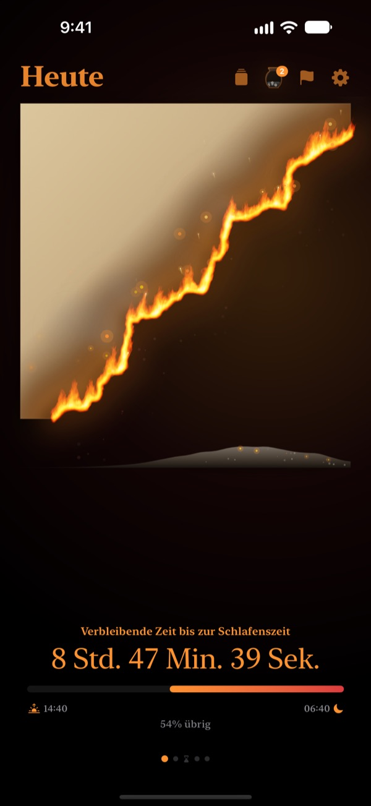
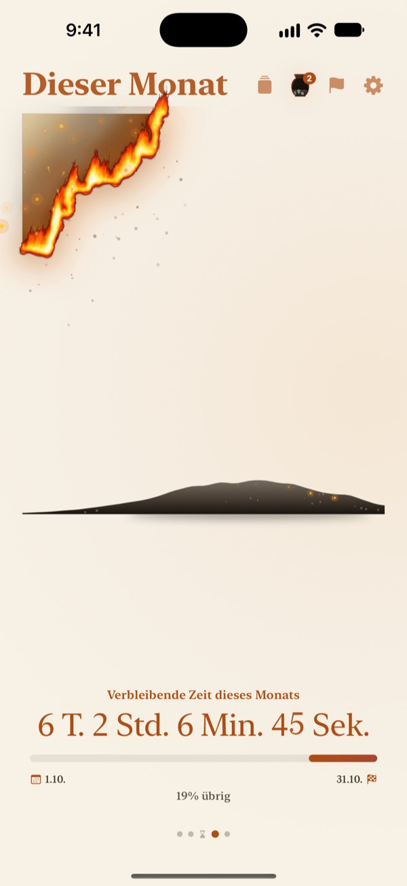
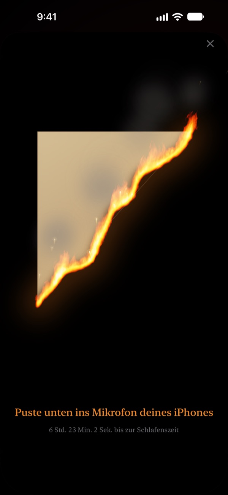
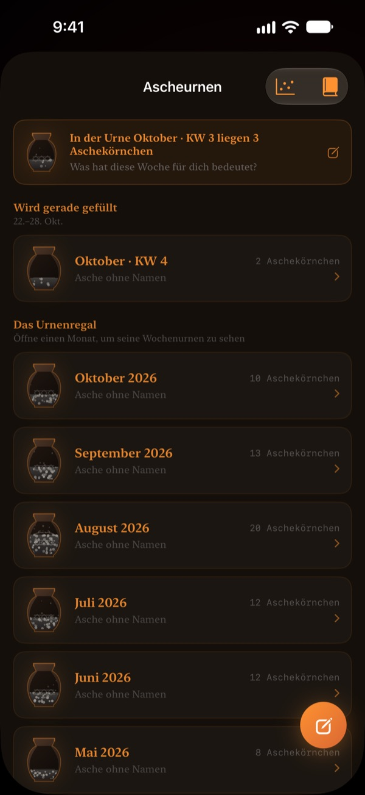

Was von heute bleibt,
verbrennt vor deinen Augen
Ein Abend, der als Zahl harmlos wirkt, fühlt sich als brennendes Pergament ganz anders an. Eine halbe Stunde vor dem Schlafen pustest du auf den Bildschirm, löschst das Feuer und schließt den Tag ab.
Das brennende Pergament, das Auspusten und die Rückblicke sind kostenlos.

Puste es selbst aus
Stell die Uhr auf kurz vor dem Schlafengehen, dann halte die Taste gedrückt oder puste ins Mikrofon.
Plötzlich Mitternacht?
Abendessen, kurz hingesetzt, und der Tag ist vorbei. Die Zahlen auf der Uhr sehen jeden Abend gleich aus, deshalb spürst du nicht, wie die Zeit schwindet. Brennendes Pergament zeigt, was übrig ist, als Pergament, das abbrennt. So merkst du es, bevor der Abend verschwindet.
Tag, Woche und Jahr brennen herunter
Vom Aufwachen bis zur Bettzeit verbrennt das Pergament langsam. Genauso siehst du, was von dieser Woche, diesem Monat und diesem Jahr bleibt.
Leg ein Ziel mit Datum als Deadline an, und der Countdown läuft gleich mit.

Den Tag auspusten
Ab 30 Minuten vor der Bettzeit pustest du auf das brennende Pergament und löschst das Feuer. Genutzt wird nur die Stärke deines Atems, aufgenommen wird nichts.
Das übrige Fragment wird aufbewahrt. Dreh es um und schreib eine Zeile über den Tag auf die Rückseite.

Vergangene Zeit bleibt als Asche
Halte den Tag mit einem einzeiligen Rückblick fest und setz ihn als Punkt in ein Diagramm mit zwei Achsen, je nachdem, wofür die Zeit draufging. Rückblicke sammeln sich in wöchentlichen und monatlichen Ascheurnen und lassen sich im Rückblickbuch wieder lesen.
Der Aschefluss zeigt mit Verteilungsdiagramm und Glutkalender, wohin deine Zeit gegangen ist.

In drei Schritten loslegen
- 1
Aufsteh- und Bettzeit festlegen
Tipp oben rechts auf das Zahnrad. Danach richtet sich, wann das Pergament brennt und erlischt.
- 2
Zeitraum wählen
Wisch zwischen Tag, Woche, Monat und Jahr, oder blende nicht benötigte Seiten in den Einstellungen aus.
- 3
Widget hinzufügen
Auf dem Home- oder Sperrbildschirm siehst du die Restzeit, ohne die App zu öffnen.
Wo du die Restzeit siehst
- Tag
- Vom Aufwachen bis zur Bettzeit
- Woche · Monat · Jahr
- Was von dieser Woche, diesem Monat und diesem Jahr bleibt
- Freizeit
- Das Wochenpergament brennt nur in den Stunden, die du dir freihältst (Pro)
- Deadlines
- Restzeit bis zum Datum eines Ziels. Eine ist kostenlos
- Widgets auf dem Home-Bildschirm
- Tagespergament in klein, mittel und groß. Woche, Monat, Jahr und Deadlines in klein und mittel
- Widgets auf dem Sperrbildschirm
- Rund, rechteckig und einzeilig
- Dynamic Island · Live-Aktivität
- Ab einer Stunde vor dem Schlafen oder den ganzen Tag. In den Einstellungen wählbar oder abschaltbar
Erweitere die Dynamic Island, um das brennende Pergament mit dem vollständigen Countdown zu sehen.
Das Pergament ist kostenlos. Pro hält mehr fest.
Kostenlos
- Pergamente für Tag, Woche, Monat und Jahr
- Flamme auspusten und Fragmente sammeln
- Einzeilige Rückblicke, Ascheurnen und Rückblickbuch
- Morgendliche Abfrage, auf Wunsch mit Schlafdaten aus Health
- Widgets für Home- und Sperrbildschirm, Dynamic Island
- Eine Deadline
Brennendes Pergament Pro
- Nur deine eigene Freizeit verbrennen
- Themen: Mondlicht-Hanji, Seladon, Abendrot
- Flammen: Lauffeuer, Glut, Funkenflug
- Gesammelte Fragmente als Karten und Poster teilen
- Rückblickbuch als PDF exportieren
- Zwölf Monate Aschefluss
- Unbegrenzt viele Deadlines
Kein Abo. Einmal kaufen, für immer nutzen, inklusive aller Pro-Funktionen, die noch dazukommen.
Neues Gerät? Tipp in den Einstellungen auf Käufe wiederherstellen.
Häufige Fragen
Das Widget zeigt eine andere Zeit als die App.
iOS zeichnet Widgets auf dem Home-Bildschirm nicht jede Sekunde neu. Sobald du die App öffnest, sind sie wieder synchron. Einen sekundengenauen Countdown zeigen die Dynamic Island und die Live-Aktivität auf dem Sperrbildschirm.
Ich puste, aber das Feuer geht nicht aus.
Auspusten geht erst ab 30 Minuten vor der Bettzeit. Prüf, ob der Mikrofonzugriff erlaubt ist, und puste etwa eine Sekunde lang gleichmäßig auf das Mikrofon unten am iPhone. Ein kurzer Laut reicht nicht.
Wird meine Stimme aufgenommen?
Nein. Es wird nur geprüft, wie stark du pustest. Kein Ton wird aufgenommen oder gespeichert.
Was sehe ich, während ich schlafe?
Nach der Bettzeit erscheint ein brennendes Herz und zeigt, wie weit die Nacht bis zum Aufwachen fortgeschritten ist. Morgens fragt die App, ob du pünktlich im Bett warst. Warst du spät dran, startet das heutige Pergament um diese Zeit angesengt. Mit Apple Health verbunden, nimmt sie ohne Nachfrage deine erfasste Einschlafzeit.
Wann kommen Mitteilungen?
Eine Stunde vor der Bettzeit. Kommt nichts an, prüf Einstellungen > Mitteilungen > Brennendes Pergament.
Verbraucht die App viel Akku?
Der Countdown in der App tickt jede Sekunde, aber Widgets werden von iOS stromsparend aktualisiert. Der Einfluss auf den Akku ist gering.
Wo werden meine Daten gespeichert?
Aufsteh- und Bettzeit, Deadlines, Rückblicke und Urnen bleiben auf deinem Gerät. Der Entwickler erhält nur anonyme Nutzungsstatistiken, Absturzdiagnosen und Feedback, das du selbst schickst. Keine Werbung, kein Tracking.
Ist Pro ein Abo?
Nein. Du zahlst einmal und behältst es für immer. Auf einem neuen Gerät tippst du in den Einstellungen auf Käufe wiederherstellen.
Fehler, Ideen oder andere Fragen? Schreib an leeo@kakao.com.